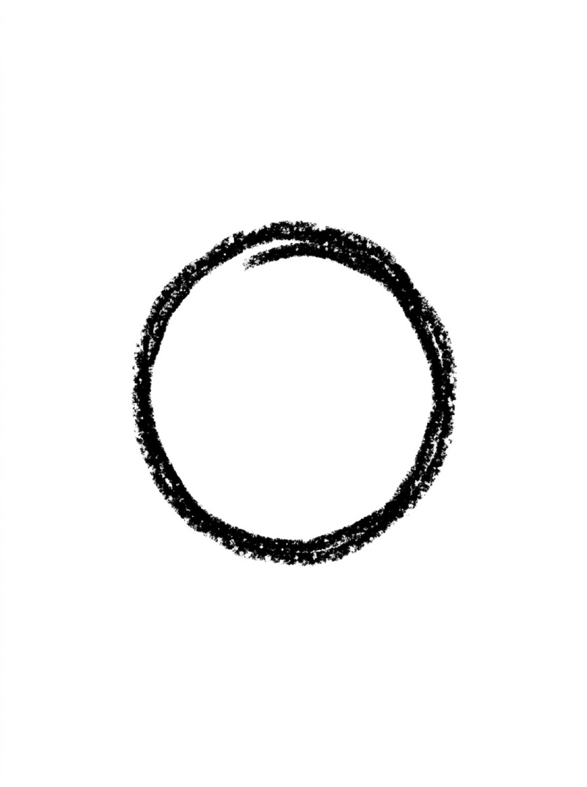
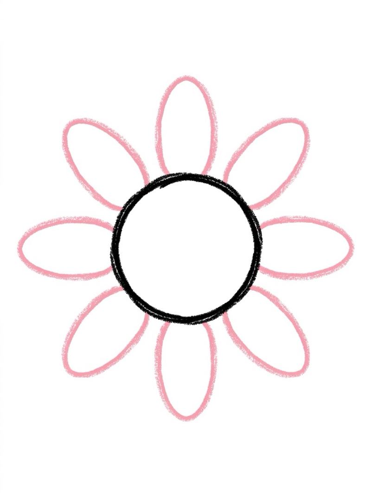
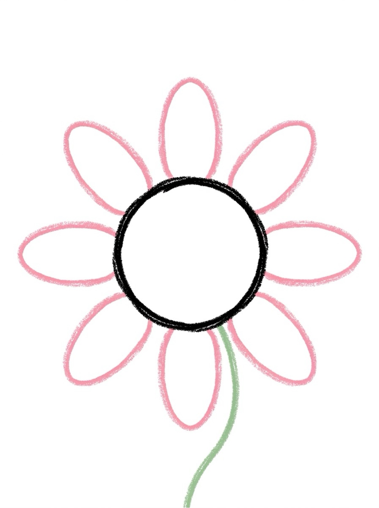
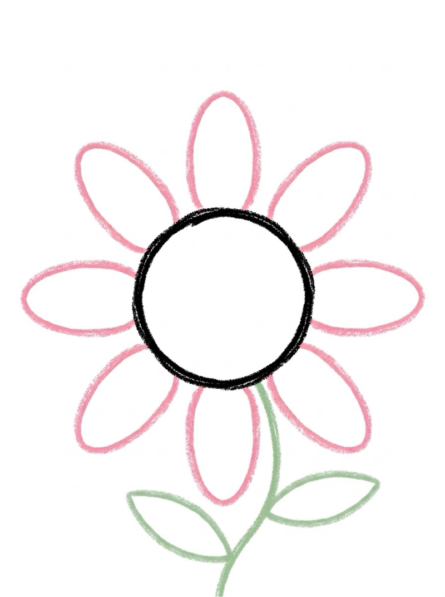
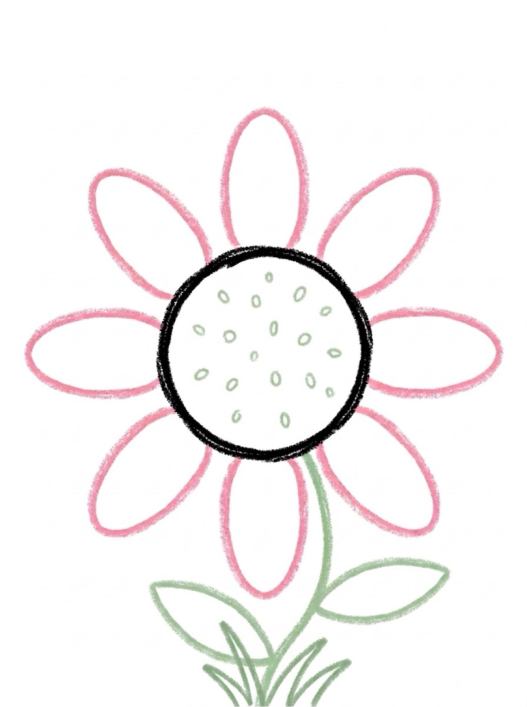
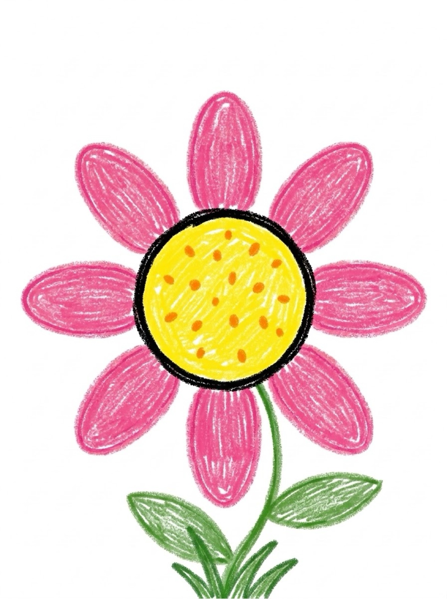

Flower Drawing for Kids How to Draw a Flower in 6 Easy Steps
Quick Answer
This free step-by-step tutorial shows kids how to draw a flower in six easy steps: a circle center, oval petals, a curved stem, two leaves, and pretty details. Download the printable PDF, grab crayons, and follow along together. Made for ages 3 and up — no signup needed, just print and draw.
At a Glance
- Subject: How to draw a flower
- Ages: 3+
- Steps: 6 steps
- Time: ~15 min
- Difficulty: Easy
- Supplies: Paper, crayons
Flowers are the perfect first drawing — every kid has seen one, and the shape is forgiving. This flower is built from a circle and ovals, so even wobbly petals look charming. The petal-counting step does quiet math practice while they draw.
✏️ How to Draw a Flower: Step by Step
One step per box — draw each new part in a different color so kids can see exactly what changed.
Step 1: The Center

Draw a circle in the middle of your paper. This round shape becomes the middle of your flower.
Step 2: The Petals

Draw oval petals all around the circle, like sun rays. Six or eight petals is perfect — they don't have to match exactly.
Step 3: The Stem

Draw a curved line going down from the flower. A little curve makes it look like it's swaying in the breeze.
Step 4: The Leaves

Add two leaf shapes on the stem, one on each side. Pointy ovals are all you need.
Step 5: The Details

Add tiny dots in the circle for seeds and a few grass blades at the bottom. Details make it yours!
Step 6: Color It In

Color your flower! Yellow center and pink petals is classic, but rainbow petals are even more fun.
📊 Flower Drawing by Age
Every age can join in — just adjust the job.
| Age | What they can do | Tip |
|---|---|---|
| 3–4 | Trace the circle and petals on the printable | Draw the stem for them — the long curve is tricky |
| 4–5 | Follow all 6 steps with a little help | Count the petals together — great number practice |
| 6+ | Draw solo and design their own flower garden | Challenge: draw three flowers in different colors |
🖨️ Download Your Free Flower Drawing Printable
The printable lays out all 6 steps one per box, big enough for little hands — kids draw right alongside each step.
⬇️ Open Free Printable 🖨️ Print🎁 Free printable for ages 3+
🌸 Flower Garden Challenge
Draw three flowers side by side and make each one different — different petal counts, different colors, different heights. Line them up into a garden row and add a sun in the corner. Comparing petal shapes builds observation skills, and the garden layout sneaks in a little pattern thinking.
🌸 Easy Flower Drawing
If you want an easy flower drawing, this is it. Flowers are one of the simplest things to draw — a circle center, petal shapes around it, a stem, and leaves. That's the whole method. No complicated shapes, no tricky proportions, just a flower that looks like a flower from step one.
Here's the pattern for an easy flower drawing in 6 steps: circle center, five petals, stem, two leaves, face details (if you want them), and color. The same steps work for a daisy, a sunflower, a tulip, or any flower your child imagines — just change the petal shape and the colors.
For kids who want an easy flower drawing they can finish fast, start with the daisy. Five round petals around a yellow center is the classic flower every child recognizes. Once they've got that, they can try a sunflower (more petals, brown center) or a tulip (pointed petals, no center circle). Same flower drawing, different results every time.
What You'll Need to Draw a Flower
Grab crayons or washable markers — flowers are the perfect excuse to use every color in the box. You'll want yellow or orange for the center, plus pinks, reds, or purples for petals and green for the stem and leaves. Standard printer paper works fine, though thicker paper holds up better if your kid presses hard with crayons.
What They're Learning
This flower tutorial practices circles and ovals — the petals are just ovals arranged in a ring, which teaches radial symmetry without the fancy words. Drawing the same petal shape six to eight times builds fine motor control through repetition, and counting petals sneaks in early math. The curved stem and leaves add gentle curve practice for little hands.
Make It Yours
Once the basic flower is done, try these twists: make the petals different colors like a rainbow flower, add a smiling face in the center, or draw a bee visiting the flower. Kids can also draw a whole garden — tall sunflowers, tiny daisies, and one giant flower that fills the whole page. Different petal shapes (round, pointy, wavy) make every flower unique.
🛒 Our Favorite Drawing Supplies
These are the supplies we reach for in our own home — washable (because kids), quality paper, and enough colors to avoid fights.
As an Amazon Associate, MomYouNeedThis earns from qualifying purchases — at no extra cost to you.
💡 Flower Drawing Tips for Parents
If the petals come out uneven, that's fine — real flowers aren't symmetrical either. The goal is a flower your child recognizes, not a perfect one. If your child gets stuck on the petals, draw one petal yourself on a scrap piece of paper and let them copy it. Most kids nail it after one demo.
Two things that help with every flower drawing attempt: let them pick the colors (a blue flower is still a flower), and don't fix their drawing. If they ask for help, draw on a separate piece of paper, not on theirs. Kids who feel ownership of their drawing come back for the next one; kids who feel corrected stop trying. The goal is a flower they're proud of, not a perfect one.
❓ Flower Drawing FAQs
What is the easiest way for a kid to draw a flower?
Start with a small circle in the center for the flower's center. Draw oval petals around it like sun rays, then add a curved stem going down, two leaf shapes on either side, and tiny seed dots in the center. Circles and ovals do all the work — no tricky shapes needed.
What age can kids start learning to draw a flower?
Most kids can follow the circle-and-petal method around age 4 with a grown-up helping, and draw one on their own by ages 5 to 6. Younger children can trace the center circle and petals on the printable.
What supplies do we need to draw a flower?
Just paper and crayons or markers. The free printable PDF lays out all six steps one per box so kids can draw right alongside each step. Yellow, pink, or purple crayons make great petals.
Is the flower drawing printable really free?
Yes — every printable on MomYouNeedThis is 100% free to download and print. No signup, no payment, just tap the download button.
Where can I find an easy flower drawing for kids?
Right here! This page teaches an easy flower drawing in 6 steps: circle center, five petals, stem, two leaves, face details, and color. Follow the steps in order for a finished flower drawing. The free printable PDF lays out all six steps one per box.
How do I print the flower drawing tutorial?
Open the PDF and print at 100% scale (not 'fit to page') so the drawing boxes stay big enough for little hands. The printable is designed to stay large — never shrunk to force a fit.
📚 Keep Exploring
More free drawing tutorials and coloring pages made for little hands and busy parents.
✏️ All 22 Drawing Tutorials